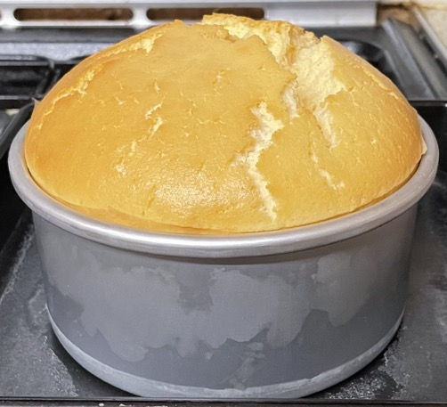
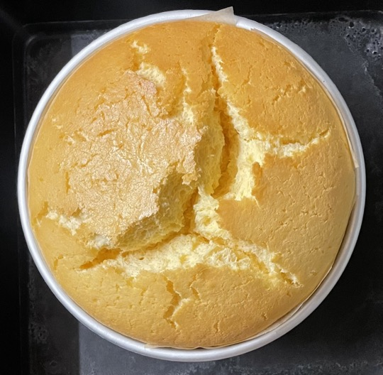

Japanese cheesecake
Batter
- Separate 4 eggs
- Gently warm in microwave to melt and combine
- 180g cream cheese
- 30g unsalted butter
- 50ml (51g) full-fat milk
- Whisk batter on medium speed so no lumps
- Whisk in
- In separate bowl sift and combine
- 35g plain flour
- 10g cornflour
- pinch salt
- Gradually whisk flour mixture into cheese mixture
Cake
- Whisk
- 4 egg whites
- 1 tsp white wine vinegar
- Mix in to form meringue with soft peaks
- Fold meringue into batter
- Pour into 15cm cake pan greased and lined with baking paper
- Bake in water bath at 140°C for 30 mins
- Reduce temperature to 110°C for 60 mins
- Flip onto plate then back up to get out of pan
Serving
- Calories = 1530, 1/8 = 190
- 8 portions
- Coulis / maple syrup
Notes
Pics

